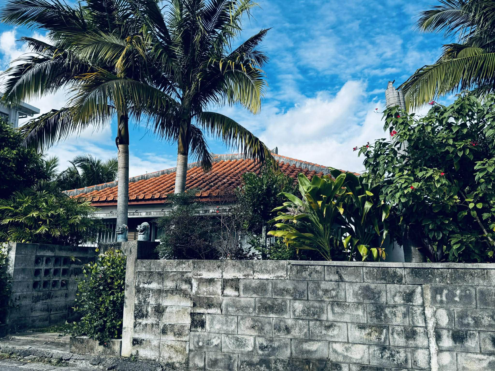

もし一つでも当てはまるなら、この3日間はあなたのためのものです。

石垣島の雄大な自然に囲まれ、デジタルの波から完全に離れる3日間。ただの旅行ではありません。
プロの施術と、計算され尽くした食事、そして大自然という非日常の空間が、あなたの心と身体に蓄積された「ノイズ」と「老廃物」を全て洗い流します。
初日と2日目の朝、プロによる深い腸揉みを実施。老廃物を物理的にデトックスし「巡りの良い身体」へと導きます。
極力油を使わず、添加物ゼロの野菜を中心とした特別メニュー。主催者の理念を理解した専属シェフが内側から綺麗にします。
スマホの電源を切り、波の音や夕日の美しさに五感を研ぎ澄ませます。脳を休ませることで直感を取り戻します。
完全にリセットされ、最もオープンになった「今」だからこそ吸収できることがあります。最高の状態でインプットを受け取って帰ってください。
日常の喧騒から離れ、本当の自分に向き合う時間を提供したいという想いから、このリトリートを企画しました。
美しい自然、身体に優しい極上の食事、そして徹底的なデトックスによって、帰る頃には顔つきが変わるほどの変化を感じていただけるはずです。石垣島でお会いできることを心より楽しみにしています。
日程：2026年7月8日(水)・9日(木)・10日(金)
場所：沖縄県石垣島（詳細は参加者にお知らせします）
定員：限定◯名様
参加費：XXX,XXX円
※定員に達し次第、締め切りとさせていただきます。